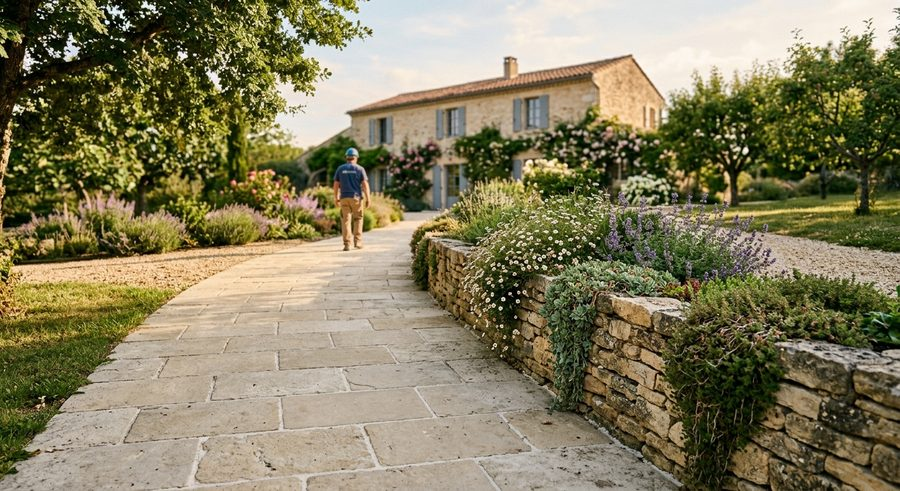

Zone d’intervention
Dans toute l’Essonne, jusqu’à votre porte.
Atmosphère Paysage se déplace chez vous pour l’aménagement et l’entretien de votre jardin, depuis Gometz-la-Ville.

Île-de-FranceEssonne et alentours
Communes
Nos secteurs d’intervention
Nous intervenons notamment autour de ces communes, et dans tout l’Essonne :
Gometz-la-VilleBures-sur-YvetteGif-sur-YvettePalaiseauSaint-Rémy-lès-ChevreuseVerrières-le-BuissonGarches
Votre commune n’apparaît pas ? Appelez-nous : nous vous dirons si nous pouvons nous déplacer.
Pour qui ?
Chaque terrain,
chaque interlocuteur.
Particuliers
Votre jardin
Aménagement, entretien et ouvrages pour la maison.
Professionnels
Vos espaces verts
Un prestataire unique pour vos extérieurs.
Dans tous les cas : visite sur place, état des lieux, puis devis gratuit.
Une question sur votre secteur ?